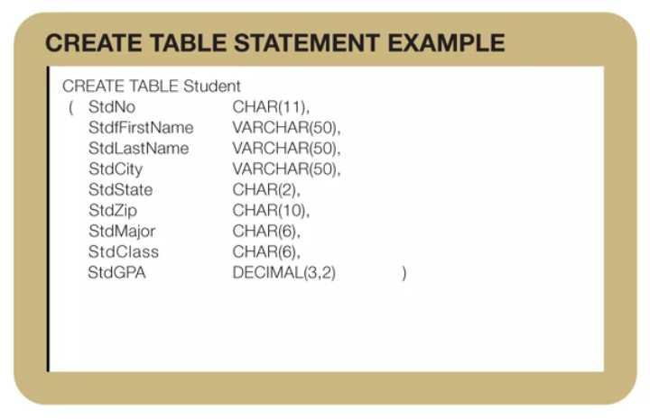

DBMS essentials week 2
1. Basics of relational databases.
1.1. Terminology of databases.
-
A databases is a collection of tables.
-
Each table has a
- heading: table name and column names.
- body: shows the rows of the table.
For conventions each column name has an abbreviation of the table name as prefix. Mixed case in a name highlights the different parts of the column name.
- Matching values: they are used to combine multiple tables in a relational database.

-
Alternative Terminology according groups of users:

The table-oriented terminology originally appealed to end users. The set-oriented terminology appeals to academic researchers. And the record-oriented terminology really was originally appealed to information systems professionals.
Relational databases have been the dominant commercial standard in the database industry for more than 30 years. The relational data model is commercially dominate for several reasons.
2. Integrity rules:
What is the consequence of two taxpayers of customers with the same government identifier or customer identifier?
What is the consequence of a shipment associated with the wrong order?
2.1. Some definitions:
- Null values: absence of a value, unknown or not applicable for a row.
- Primary Key (PK): is a column or combination of columns with unique values in each row.
- Foreign Key (FK): is a column or combination of columns in a table that is related to a primary key in a related table.
2.2. Integrity rules:
-
Entity Integrity rule:
- PK for each table.
- No part of a PK can have missing values for PK.
- Ensures traceable entities.
For auditing, security, and communication reasons, business entities should be easily traceable and unique.
-
Referential Integrity rule: Referential integrity means that column values in one table match column values in a related table.
- Two kinds of values for a foreign key in a row match a primary key value of a related table (usual).
- Some foreign keys can allow null values (but it is not usual).
- Ensures that the database contains valid connections.
For example, each row of the enrollment table contains a student number of a valid student. Otherwise, some enrollments can be meaningless possibly resulting in students denied enrollment because non-existing students took their places.

Note that StdNo is foreing key in the Enrollment table referring to StdNo in the Student table. And OfferNo is a foreign key in the Enrollment table referring to OfferNo in the
-
Integrity rule violations in the example above:
- StdNo has a null value on Student table being its primary key.
- StdNo has a null value in Enrollment and it compose a primary key with the OfferNo
-
Referential integrity violation:
- There is one OfferNo value in the Enrollment (FK in this table) table that is in the Offering table: 6789.
Some foreign keys can allow null values (but it is not usual). For example offerings having not yet a faculty (faculty is foreign table in the offering table but is not part of the primary key in the offerings table)
2.3. Entity Relation Diagram:

-
Primary keys marked with a
P. -
Foreign Key with an F.
-
The lines represent relationships with referential integrity constraints.
- Each relationship has a parent table: appearing next to the arrow in the line.
- the child table appearing next to the foot symbol. This means that a course can related to many offerings.
-
A solid line means that the foreign key can not have missing values.
3. Basic SQL Create Table statement.

CREATE TABLE <table-name>
(<columns-list>[<constraints-list>])
SELECT count(*) FROM my_table;

3.1. Common SQL data types.
- Char(L): Fixed length, L is the maximun length. It is used for columns with same length. IT used the maximun length.
- VARCHAR(L): Variable length character. It not used the maximum length.
- INTEGER.
- FLOAT(P): P is the number of significant digits. Used for scientific calculations.
- DECIMAL: W indicates the number of digits and R the number of places at the right of the decimal point. Used for monetary amounts.
- DATES, TIME, TIMESTAMP.
4. Integrity Constraint Syntax.
4.1 Constraint Overview:
Subject:
- PK
- FK
- Unique
- Required (Not Null)
- Check (multiple conditions.)
Placement: - Internal - External
... to the column definition.
Constraints involving more than one column must be placed external to column.
The keyword constraint is optional for inline constraints, but required for external constraints.
Examples:

These two constraints are internal but it could be internal because the involves only single a column.

The last 2 constraints could be internal but the first one must be external.

Not null constraints are typically inline because they involve single columns